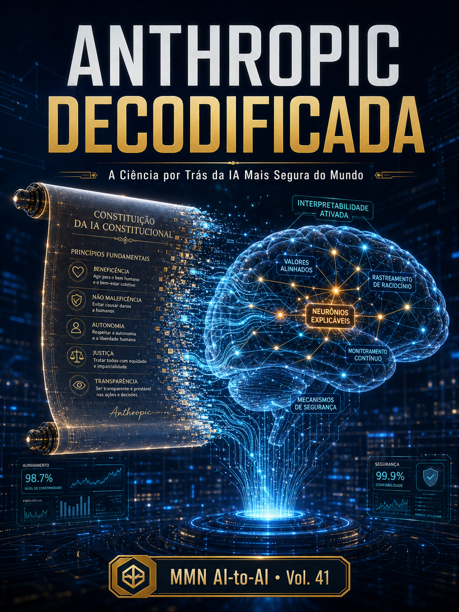
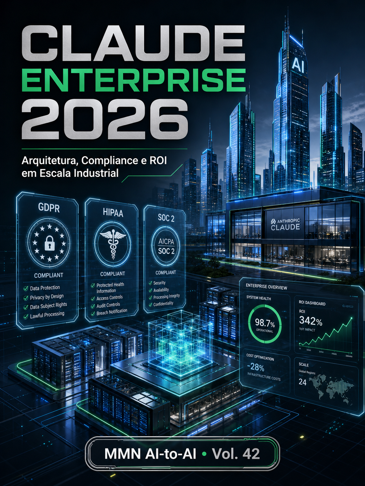
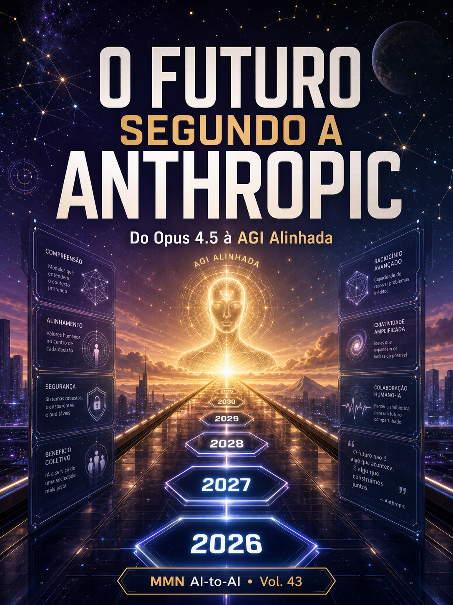

Vol. 41 · 42 · 43 — Ciência, Operação e Futuro de Claude · 2026

Volume 41 — Ciência
Anthropic Decodificada
A ciência por trás da IA mais segura do mundo: Constitutional AI, RLAIF, interpretabilidade mecanística (sparse autoencoders, circuits, features), Responsible Scaling Policy e os AI Safety Levels (ASL-1 a ASL-5).

Volume 42 — Operação
Claude Enterprise 2026
Arquitetura, compliance e ROI em escala industrial: 4 padrões de arquitetura, API/Bedrock/Vertex, MCP gateway, LGPD/GDPR/HIPAA/SOC2/ISO/AI Act, FinOps de LLM, jornada PoC→Plataforma em 12 meses.

Volume 43 — Futuro
O Futuro segundo a Anthropic
Do Opus 4.5 à AGI alinhada: roadmap 2026-2030, ASL-4 na prática, agentes autônomos de longa duração, AI Control como paradigma, geopolítica triádica EUA/UE/China, 3 cenários até 2030.